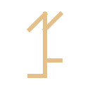

Outil de développement
Symfony Console Skeleton
Une base pour créer des applications console avec Symfony.
PHP · Symfony · DockerCode source
Outil de développement
Une base pour créer des applications console avec Symfony.
Cartographie
Tracer, croiser et analyser vos pistes sur une carte. Import et export GPX pour les chasses au trésor.

Outil pour les énigmes
Générer et combiner des chiffres cisterciens pour explorer les énigmes des chasses au trésor.
Exécuter des commandes shell dans Messenger, avec pipes et redirections. Code et documentation.
Corriger les liens vers l’éditeur avec les chemins relatifs, notamment sous Docker.
Corriger une incompatibilité de dépendances avec Translation Contracts.